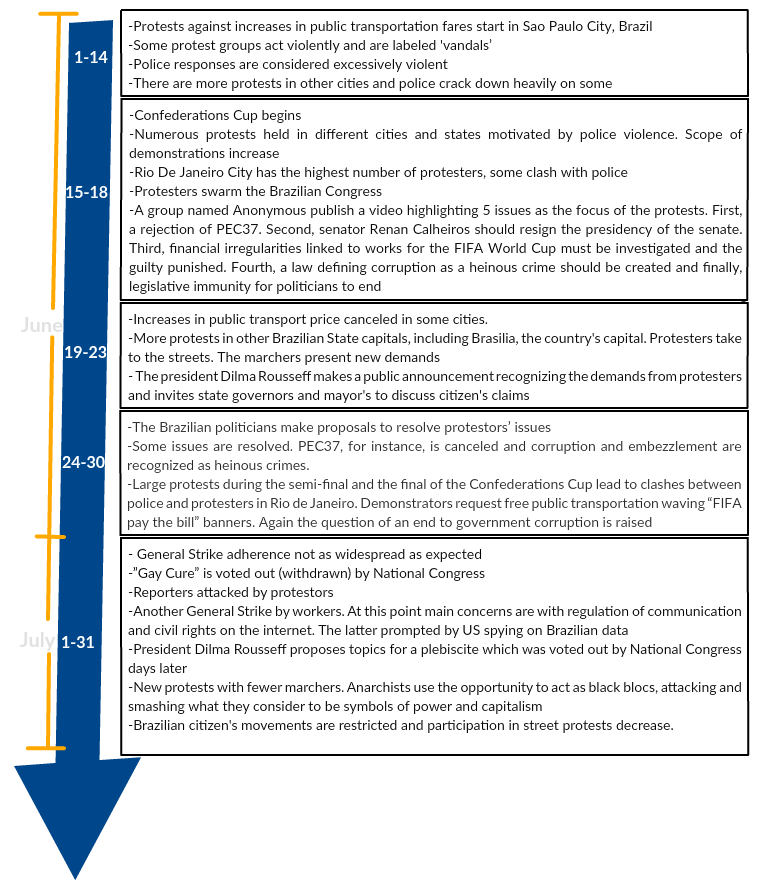
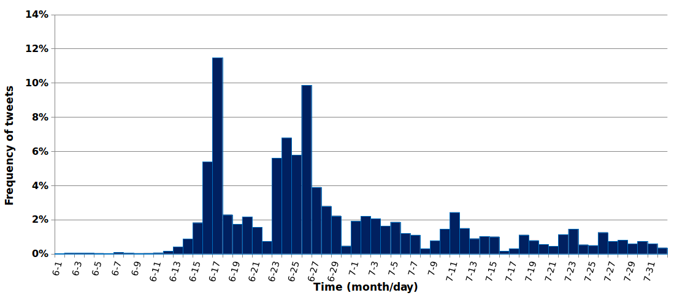

Three human volunteers raters classifed a sample of 4,422 tweets. The sample was build upon the raw dataset which contained more than 400,000 messages. Before to start the annotation task, each annotator received basics explanations related to both “why” and “when” the dataset was build. Then, the following two explanations were presented. The first one concerned to the motivation which was to understand how the activists and population express their opinions (or sentiment) in the social media, manly in Twitter. The second is related to the period of data retrieval that to occur during the manly Brazilian protests events in 2013.
The aim was to classify if the opinion expressed in the messages was in some way positive or negative about the protests. To do that, we have defined a key question as a guide for the classification task. The question is “the tweet text expresses an opinion of agreement (positive), disagreement (negative) or neither (neutral) to the protests?”. The answer should be just one to be assigned to the message. Thus, the annotators judged whether a message expresses an opinion in favor (positive) or against (negative) the protests. If a classifier judges that a message did not express a positive or negative opinion for any reason, that message should be considered neutral. In other words, we have defined three (answers) classes: positive, negative or neutral. The table bellow shows examples of tweets messages from the dataset.
Examples of tweets and annotations assigned
|
Tweet text |
Assigned sentiment |
| 1 |
Falta de leitos nos hospitais públicos leva milhares de pacientes recorrem ao Ministério Público para se tratarem #VempraRua #SOSSUS |
Positive |
| 2 |
Cara, desisto de fazer vocês entenderem. Não adianta ficar nessa mobilização " #mudabrasil" sem propôr mudanças reais. |
Negative |
| 3 |
O pau comendo em várias cidades do Brasil e o Fantástico começa com música feliz, falando sobre a Copa das Confederações. #protestorj |
Neutral |
| 4 |
Convoco lutadores de Jiu-Jitsu e Muay Thai a participar dos protestos para dar surra nos baderneiros e saqueadores de lojas. #mudabrasil |
Negative (it received two negative and one positive assignment) |
| 5 |
A torcida continuou cantando o hino nacional, mas n foi p fazer bonito para a rede Globo e sim p mostrar sua forca! #OGiganteAcordou |
Neutral (received the three possible sentiments annotations) |
We should note that the annotation task have started eight month after the protests events. In the first moment, just a pilot was built with 200 messages [França and Oliveira, 2014]. After that, the sample was built in a random way taking 1% of messages to each day of the raw data set. We also assume a minimum of one message per day if the 1% represents a value less than one. The entire labeled data set was then finished one and half year later of the protests. That approach enables us to take some feedbacks such as the major of the messages were in Brazilian Portuguese. Furthermore, we could also take some inter-rater agreement measures among the annotators. The following tables summarize the result of annotations task and ageement rate.
Download the Gold Standard Dataset. See also the paper which describe both datasets and the BSD 2-Clause License.
Rating among annotators and classes
| Classes |
rater-1 |
rater-2 |
rater-3 |
| Positive |
1,786 |
1,723 |
1,945 |
| Negative |
191 |
277 |
294 |
| Neutral |
2,445 |
2,422 |
2,183 |
| Total of Labeled Messages (#) |
4422 |
Agreement among the annotators (raters)
|
# tweets |
% |
| Unanimous sentiment |
3,449 |
~ 78% |
| Two sentiments |
936 |
~ 21% |
| Three sentiments |
37 |
~ 1 % |
| Total |
4422 |
100% |
The figure bellow summarizes events occurred during Jun 1 and Jul 31, 2013. We have focused in that interval because during these months the protests were more intense. The summarization is presented as a timeline and the informations was bases in [Brazil 2013]. In a first moment, marchers complain about the rises in public transport fares. Motivated by the large proportion of protesters and police clash, and just after the demonstrations gain attention in social media, Brazilian major media published somethings the events. It is important to highlight that from the 15th until 30th of June, Brazil hosted the FIFA Confederations Cup and the World Youth Days from 23th to 28th of July.
| #acordabrasil, #vemprarua, #ForaFifa, #ogiganteacordou, #anonymousbrazil, #MPL, #passelivre, #pec37, #mudabrasil, #ChangeBrazil, #anonymousbrazil, #protesto, #foradilma, #protestorj, #protestabrasil, #primaverabrasileira, #forafeliciano, #ocupa, #copapraquem, #protest, #pec33, #pec99 |
Hashtags used to retrieve Twitter’s messages
After some demonstrations in the Brazilian streets, the amount of claim became confused. Besides ticket transport prices, the folks also demonstrated their disappointed about government corruption, legislative proposals (e.g. PEC 37) and the large expenses concerned with events that were to be held in the country. There was no official social leadership neither political party leading the protests during Brazilian protests. Therefore, a group named Anonymous Brazil published a video suggesting five main claims. We highlighted two of them. First of all Anonymous proposed the rejection of the proposed amendment to the Brazilian constitution known as PEC 37 which intended forbid any investigations by the federal public ministry. The PEC 37 was understood as facilitation to politicians leave without pay for their corruption. Second, they suggested starting an investigation for verifying irregularities related to money spent with infrastructure for FIFA World Cup that would be in 2014.

The Timeline of the main events during the Brazilian protests, 2013
Regarding to data collecting, we used the Twitter’s API during the Brazilian protests between Jun 1 and Jul 31, 2013 (inclusive). In order to coverage posts related to the protests, we utilized 22 hashtags used by activists which are presented in the list bellow. The criteria for chosen those hashtags was based on the manual identification of common keywords associated with the protests events in Brazil during that period.
Each tweet returned by the API as a JSON representation. That JSON comprises all matadata provided by Twitter. Those metadata include, for example, data about the user that published the message, a timestamp, possibly a geolocation, and so on. Those tweets former a raw data set with 432,975 messages published by 180,005 different users (approximately 2.41 tweets per user). The informations about the raw data set are summarized in the table bellow. The next figure depicts the frequency of tweets per day between the Jun 1 and Jul 31, 2013. We should point out that most messages were written in Brazilian Portuguese language.
Download the raw data set.
Rating among annotators and classes
|
# Amount |
| Total of messages |
432,975 |
| Total of users |
180,005 (average of ~2.41 messages per user) |
| Period of data collect |
61 days (from Jun 1 up to Jul 31, 2013) |

Frequency of Tweets per Day